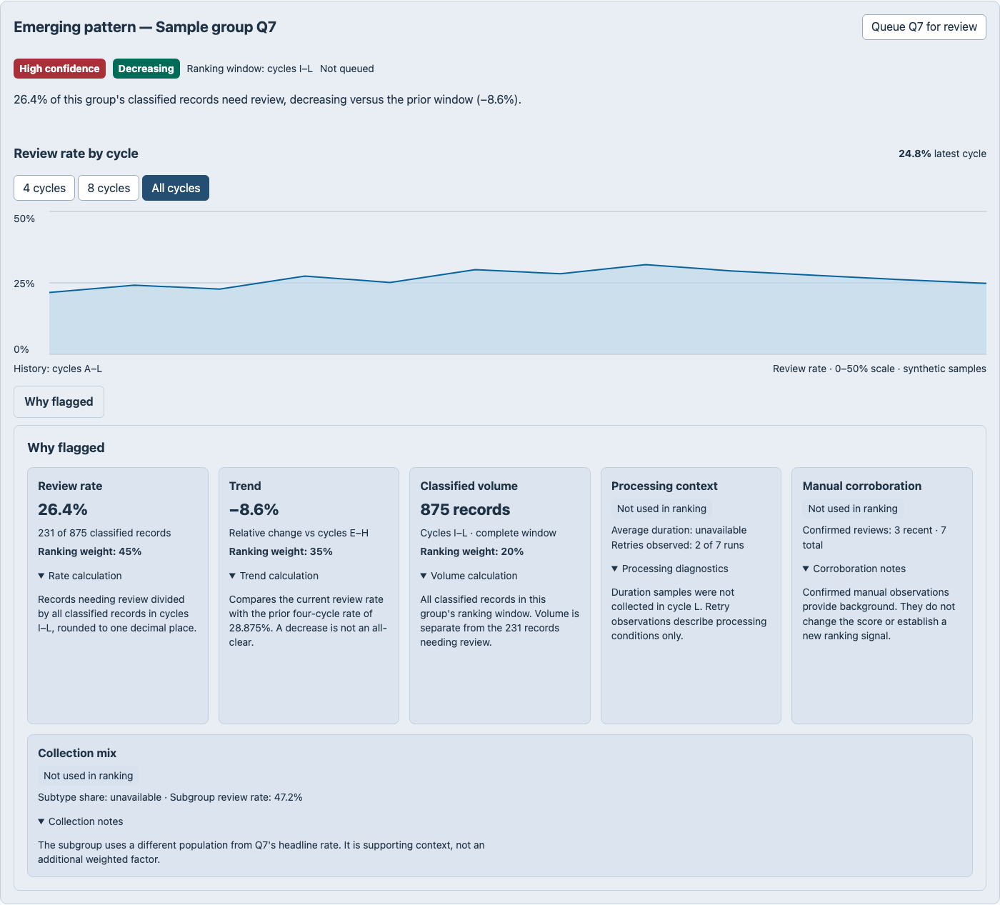
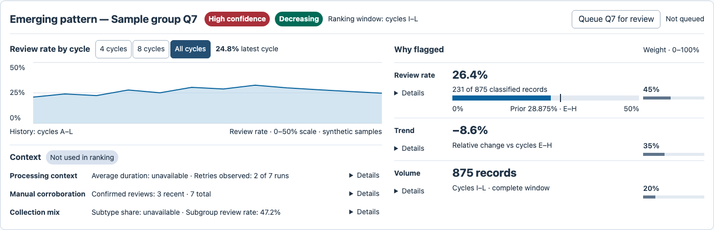
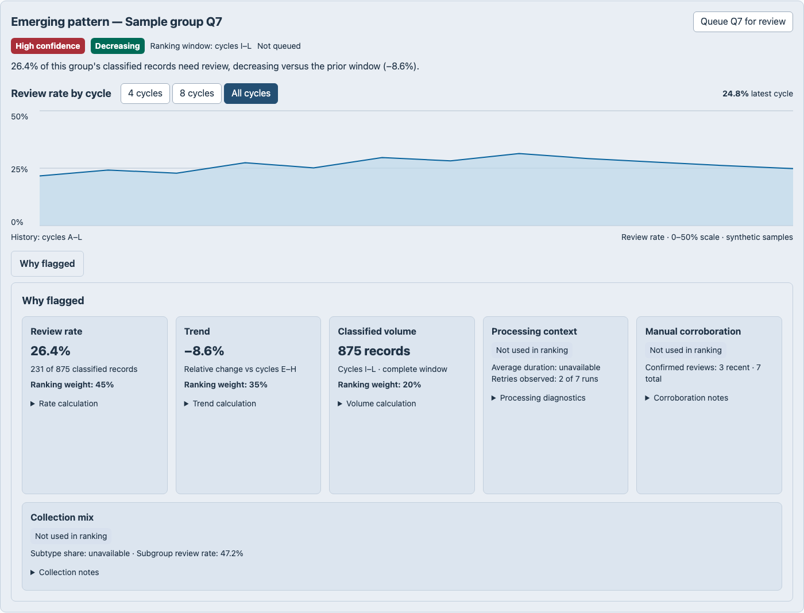
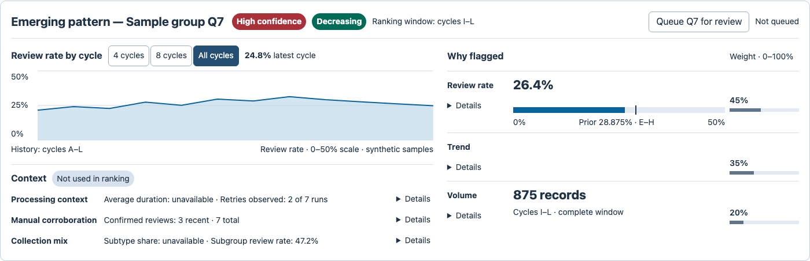

Viewrule · Annotated calibration case
Review the whole composition.
A richer decision view: twelve history samples, three weighted ranking factors, three context groups, six disclosures, and a review action. The change is in how those parts work together.
What changed—and where
Existing calibration fixture, not a pilot treatment result. Same capture conditions and display scale. Outlines are annotations; original screenshots are linked below.

{kind=link}

{kind=link}
1 · Put shared context in one header
176 → 47 px. Identity, confidence, direction, ranking window, and action share a row. The required context stays visible.
2 · Place history beside the decision evidence
234 → 150 px figure height. Twelve samples retain the labeled 0–50% scale; the latest value moves next to the range controls. Chart area changes under the authored task contract.
3 · Compare factors as aligned rows
The rate, trend, and volume retain their values and comparison context. 45% / 35% / 20% weights use aligned 0–100% tracks. Required facts stay in the summary; supporting explanations use Details.
4 · Separate context from ranking
Three tall context cards become three aligned rows under one “Not used in ranking” label. Missing-value notices and counts remain visible; diagnostics can still expand.
Preserved in the initial view
26.4% · 231 of 875 records · −8.6% versus cycles E–H · 875 records · ranking weights · all three context summaries. Sampled text sizes are unchanged; chart and action scope remain distinct.
Both originals are 1400 px wide, captured within a 1440 × 1000 CSS px viewport at device scale 1. Full-element capture includes the before state below the viewport. Display scaling does not change the reported CSS measurements.
Why the intermediate component pass still fails · 1,067 px tall
The header and toolbar satisfy their component bounds, and explanations use disclosure. But the five-card row and separate context band still stretch the assembled view. Required ranking cards do not fit completely in the initial viewport. Passing components did not establish a passing composition.

{kind=link}
Why small alone is insufficient · hidden-evidence control
This variant is also 452 px tall. It still fails: the denominator, trend, and comparison window sit behind closed Details. Compactness does not compensate for missing decision evidence.

{kind=link}
Measurements and boundaries
| Measured scope | Before | Components only | Composition |
|---|---|---|---|
| Total surface height | 1,266 px | 1,067 px | 452 px |
| Header height | 176 px | 121 px | 47 px |
| Toolbar height | 100 px | 52 px | 44 px |
| History figure height | 234 px | 234 px | 150 px |
| Declared rule findings | 7 rule IDs | 5 rule IDs | 0 |
The preserved source fixture and its existing installed regression supply these observations. Fresh captures match the validated images byte for byte. Findings count rule IDs, not independent real-world defects. The right-hand evidence panel changes membership, so its height is not compared across stages.
This is an existing, authored calibration example—not a new agent trial or an outcome of the short preflight. The controls establish specific rendered requirements and sampled interactions. Relevance, decision sufficiency, and general design quality remain human judgments. No human approval is inferred.
Measurements and interaction observations · Retained CLI report · Source and image hashes · Task contract · Original pilot gallery